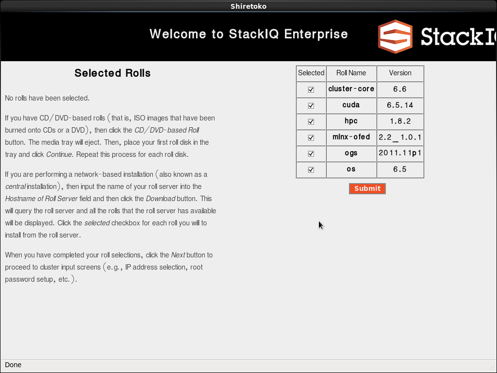
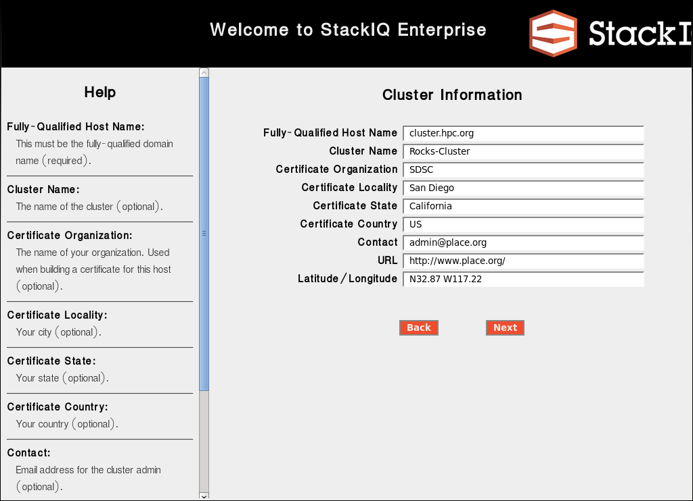
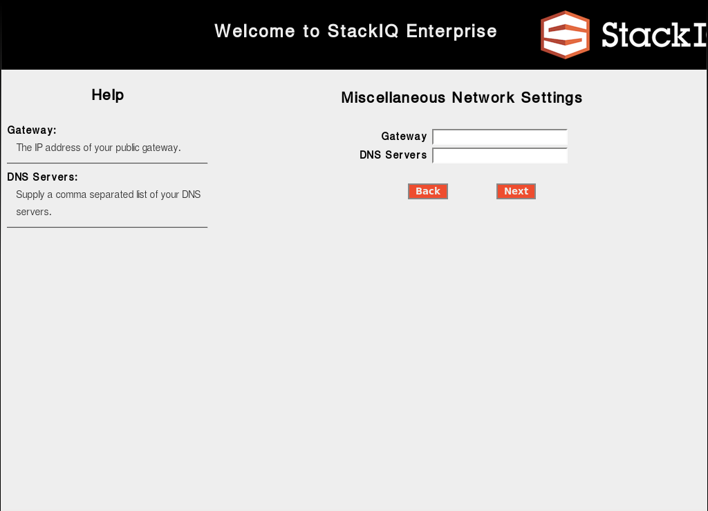
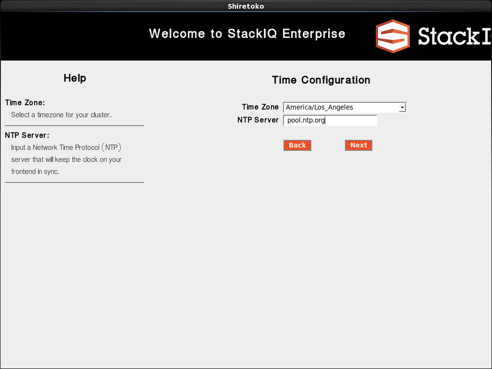
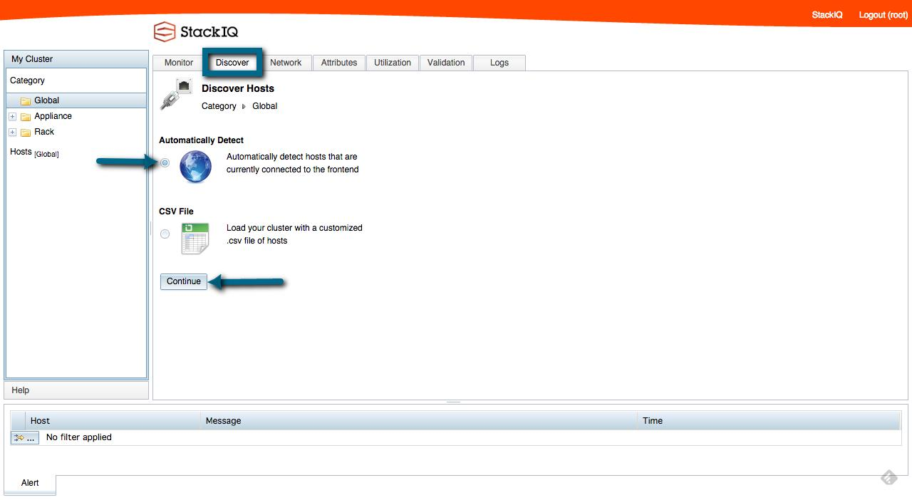
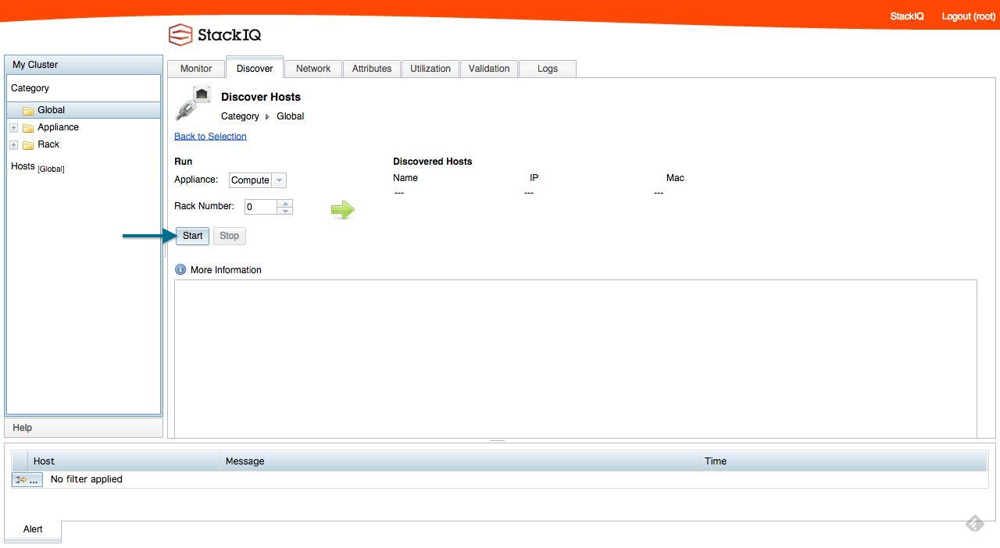
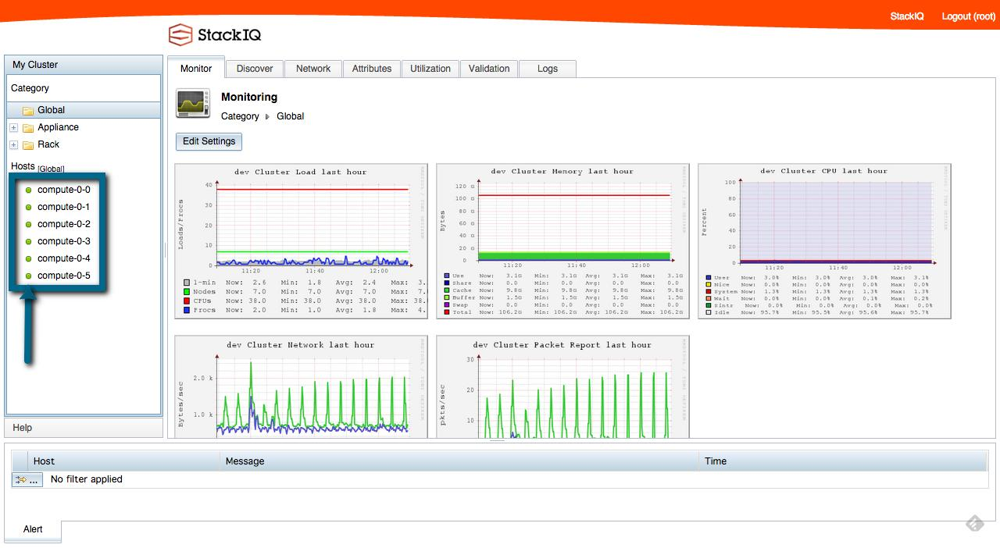

Quick Start Guide: Installing StackIQ Enterprise HPC¶
Prerequisites for Installation¶
Public Networking Address for your frontend. This includes
- IP Address
- Netmask
- IP Address of Gateway / Router
- IP Address of DNS Server
DVD Burner
Backend Nodes should be set to PXE first in the BIOS.
StackIQ Enterprise HPC ISO, downloaded from the StackIQ Website.
Cluster Manager Installation¶
Burn the ISO on to a DVD.
Insert DVD into the Cluster Frontend and, boot from DVD.
Wait for the Welcome screen.

Welcome screen
Click on CD/DVD-based Roll.
Select the following Rolls on the Roll Selection Screen.
- Cluster-core
- OS
- HPC
- OGS
- mlnx-ofed: Select if the cluster has Mellanox OFED Cards.
- CUDA: Select if the cluster has NVidia Graphics cards.
Roll Selection Screen
Click Submit.
You should now be back on the original Welcome Screen. On the left-side, you should see a list of rolls that have been chosen.

Selected Rolls
Click Next.
On the Cluster Information screen, input the Fully Qualified Host Name, and Cluster Name.
Cluster Information screen
Warning
- The cluster name may not have spaces in it.
- The Fully-Qualified Hostname should be resolvable by your local DNS server.
Click Next.
Enter the Private Network Information on the Private Network Information Screen.

Private Network Information Screen
Note
By default, the private network information is set to the 10.1.0.0/16 network. If the cluster does not have any special networking setup and the cluster private network is completely isolated from any other network, you may choose to use the default network space.
Click Next.
Enter the Public Network Information on the Public Network Information Screen

Public Network Information Screen
Note
There are no defaults to this information. Enter the IP Address and the netmask obtained from your network administrator.
Click Next.
Enter the Public Network Gateway and DNS Information on the Gateway and DNS Information.
Gateway and DNS Information
Note
Enter the Router/Gateway and the DNS Server information obtained from your network administrator.
Click Next.
Enter the Root Password on the Password Screen.

Password Screen
Click Next.
Enter the Timezone Information on the Timezone Screen.
Timezone Screen
Click Next.
Select Auto Partitioning on the Disk Partitioning Screen.

Disk Partitioning Screen
Click Next.
You should now see the Package Installation and Post Configuration Screen.

Package Installation and Post Configuration Screen
This process can take from anywhere between 10 minutes to 1 hour depending on the speed of your DVD drive.
After the Package installation is complete, the Cluster manager reboots. Wait for Cluster Manager Node to come up to a login prompt. This process, depending on the speed of your processor, and hard-drives will take from 10-30 minutes.
Once the Cluster Manager completes the boot process, you can install the Backend nodes. See section Installing Backend Nodes to instructions on how to install Backend nodes.
Installing Backend Nodes¶
This section covers how to install a Backend node using the StackIQ Web UI.
After the Cluster Manager boots up, point your web-browser to the StackIQ Cluster Manager Web UI at http://<cluster-manager-public-fqdn>/. You should see the StackIQ WebUI Start Screen.

StackIQ WebUI Start Screen
Click on the Login link at the top right hand corner of the screen.
The link opens a Login Dialog Box. Use the username root and the password that was chosen during installation on Password Screen.

Login Dialog Box
Click on the Discover Tab, choose Automatically Detect, and click Continue.
Discover Tab
Click on Enable to enable the Automatic Discovery feature.

Discover Enable
Click on the Start button to start discovering hosts as they come on the network.
Discover Start
Power On the backend nodes one-by-one. They will PXE-boot, and will be discovered by the Cluster Manager node as shown on the Discovery Visualization Screen.

Discovery Visualization Screen
You should also see all the nodes start installation, and share packages. Once all the hosts have been discovered, click Stop to stop automatic discovery.
Warning
If automatic discovery isn’t stopped, any new host that comes on the network will be discovered and re-installed, even if the host is not meant to be part of the cluster.
Once all the nodes are discovered, and installed with the Operating System, they will reboot into the Running State. The status lights to the left of the hosts will turn from gray to green.
Running State
After the status lights of all the nodes have turned to green, your cluster is now ready for use.